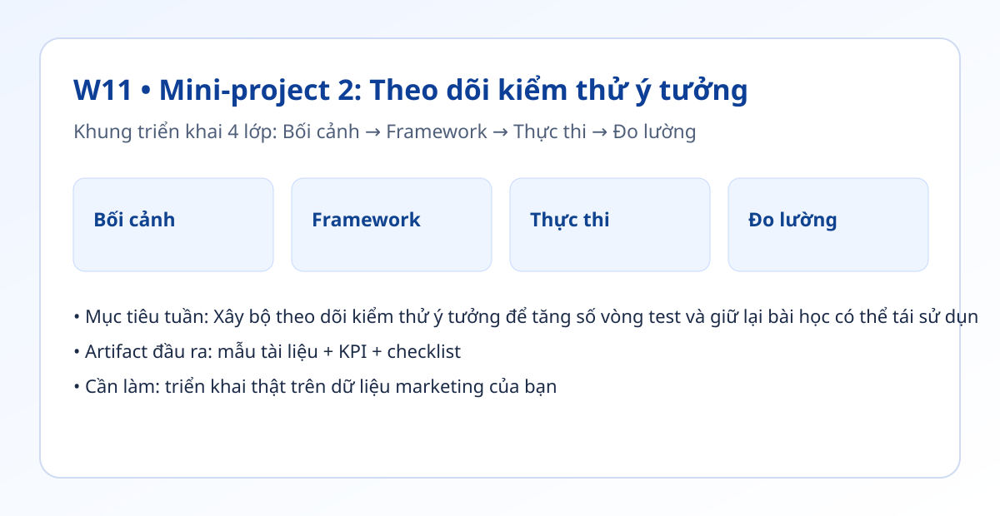

Hình trực quan module

Bối cảnh thực tế
- Rất nhiều đội chạy kiểm thử nhưng không có hệ thống lưu kết quả nên học xong lại quên.
- Một bảng theo dõi tốt không chỉ ghi số liệu mà còn giúp ra quyết định nhanh.
- Tuần này bạn tạo vòng lặp: giả thuyết → kiểm thử → quyết định → bài học.
Khung tư duy cốt lõi
- Bảng creative_tests: giả thuyết, biến thể, KPI mục tiêu, KPI thực tế, quyết định, bài học.
- Luật quyết định tự động theo ngưỡng KPI.
- Rà soát định kỳ để gom bài học thành cẩm nang.
Quy trình triển khai chi tiết
- Bước 1: Thiết kế bảng theo dõi có cột rõ cho giả thuyết và biến thể.
- Bước 2: Đặt KPI mục tiêu cho từng kiểm thử trước khi chạy.
- Bước 3: Tự động gắn nhãn giữ/cải tiến/dừng theo kết quả.
- Bước 4: Tổng kết hàng tuần: kiểm thử thắng, kiểm thử thua, nguyên nhân.
- Bước 5: Chuyển bài học lặp lại thành quy tắc trong prompt/brief.
- Bước 6: Theo dõi số vòng kiểm thử mỗi tháng.
Tình huống nhỏ với số liệu
| Chỉ số | Trước | Sau |
|---|---|---|
| Số kiểm thử/tháng | 4 | 9 |
| Tỷ lệ kiểm thử có kết luận | 50% | 100% |
| Thời gian ra quyết định | 3 ngày | 1 ngày |
Kết luận: Bảng theo dõi giúp đội tăng số vòng kiểm thử và rút ngắn thời gian ra quyết định nhờ quy tắc rõ ràng.
Sản phẩm bàn giao tuần này
- Bảng theo dõi kiểm thử ý tưởng.
- Bản tổng kết bài học theo tuần.
- Cẩm nang mini: 5 điều nên làm và 5 điều nên tránh.
Bài tập thực hành (45-60 phút)
- Nhập dữ liệu 10 kiểm thử gần nhất vào bảng theo dõi.
- Gắn nhãn tự động theo ngưỡng KPI.
- Chốt 3 bài học có thể dùng cho tuần kế tiếp.
Thang đo hoàn thành
| Mức | Mô tả |
|---|---|
| Mức 0 | Có số liệu nhưng không có quyết định |
| Mức 1 | Có quyết định nhưng thiếu bài học |
| Mức 2 | Có bảng theo dõi + bài học + quy tắc |
| Mức 3 | Tăng >=2x vòng kiểm thử/tháng |
Lỗi thường gặp
- Không đặt KPI mục tiêu trước kiểm thử.
- Ghi dữ liệu rời rạc không theo mẫu.
- Không tổng kết bài học sau mỗi vòng.
Video thực hành (tùy chọn)
Phần học chính đã đầy đủ bằng văn bản và ví dụ. Nếu bạn muốn xem thao tác thực tế, dùng các video gợi ý sau:
Đánh dấu tiến độ
Tuần này chưa hoàn thành
Đã hoàn thành tuần 11